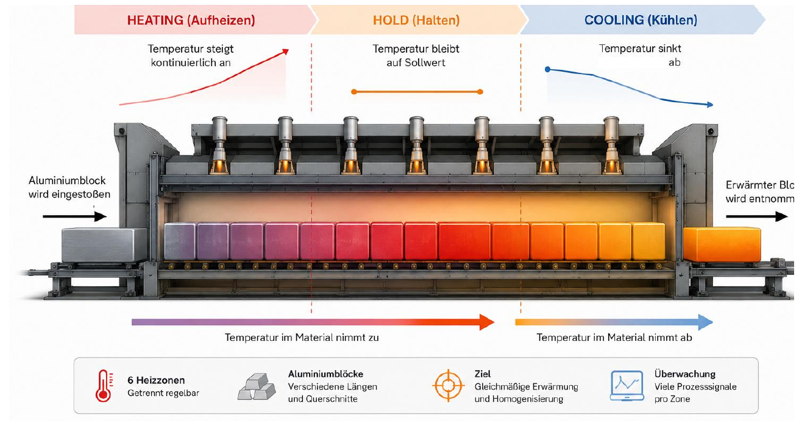

Research · Industry 4.0 · Machine Learning
Anomaly Detection in Industrial Process Data
Industrial time-series data. A case study of walking beam furnaces (Stoßöfen).

Project Overview
The aim is to identify suitable machine-learning methods for anomaly detection in real, multivariate and predominantly unlabeled process data. The work is a criteria-based comparison of approaches, not a search for one universally best algorithm.
There is no universally best anomaly detection method.
The Challenge
Anomaly detection in a walking beam furnace process has to deal with industrial conditions that make a purely model-centric view insufficient.
-
01
More than 100 relevant process signals
-
02
Multiple process phases Heating · Holding · Cooling
-
03
Rare and predominantly unlabeled anomalies
-
04
High requirements for robustness and traceability
Objective
The objective is to evaluate which machine-learning approaches are suitable as a starting point for practical anomaly detection on the furnace process. The assessment considers industrial constraints rather than a single theoretical performance measure.
- Robustness
- Interpretability
- Handling of unlabeled data
- Parameterization effort
- Multivariate processing
- Unknown anomaly types
Industrial Process Data
The use case is industrial process time series from walking beam furnaces. The figures below follow the project presentation and are not a measured sensor inventory.
100+
relevant process signals
Heating Holding Cooling
process phases
Temperature Gas Air
process quantities
Rare
predominantly unlabeled anomalies
What shaped the comparison
The model itself was not the only decisive factor.
The comparison therefore treats detection as a chain of choices, not as the selection of an algorithm in isolation. This is a conceptual relationship used for evaluation, not a claim that a specific pipeline was implemented.
- Data preparation
- Anomaly score
- Threshold
- Model
From Process Data to Criteria-Based Evaluation
The project moved from the industrial use case to a qualitative comparison of six machine-learning approaches, then to a practical starting point.
- Industrial Process Data
- Use Case Requirements
- Literature & Model Research
- Six ML Approaches
- Criteria-Based Evaluation
- Prioritization
- Practical Starting Point
Basic principle of model comparison
From process data to criteria-based evaluation
-
Process data
Temperature, gas, air, control variables
-
Preprocessing / feature engineering
Cleaning, segmentation, features
-
Model
e.g. PCA, One-Class SVM, Isolation Forest, Autoencoder
-
Anomaly score
e.g. reconstruction error, distance, decision value
-
Threshold / decision
normal or anomalous
-
Evaluation by defined criteria
e.g. robustness, interpretability, parameterization effort
Not only the model itself, but also score formation and the threshold influence the result.
Investigated Models
Six approaches were investigated as candidates. Investigation here means literature- and criteria-based comparison, not a completed industrial deployment of each model.
-
01
Moving Average
Simple statistical baseline for identifying deviations from a smoothed local level.
-
02
PCA
Multivariate method for representing dominant variation and identifying observations poorly explained by the main components.
-
03
One-Class SVM
Boundary-based method for modelling a region of normal operation.
-
04
Isolation Forest
Ensemble method that isolates unusual observations through random partitions without requiring labeled anomalies.
-
05
Local Outlier Factor
Density-based approach comparing the local neighbourhood of an observation with neighbouring observations.
-
06
Autoencoder
Neural reconstruction model suited to more complex and potentially nonlinear relationships.
Evaluation Criteria
The models were not judged solely by theoretical detection performance. Suitability for the furnace process was assessed against these industrial criteria.
- Unlabeled data
- Unknown anomaly types
- Robustness
- Interpretability
- Multivariate processing
- Parameterization effort
- Extensibility
Prioritized Models
The comparison showed that the most complex model is not automatically the most suitable model for industrial use.
Of the six investigated approaches, three were prioritized for the walking beam furnace process. Isolation Forest is the preferred starting point. One-Class SVM is a complementary option. The Autoencoder is a further development path, not the first model to deploy.
01
Preferred Model
Isolation Forest
- Suitable for unlabeled data
- Efficient and robust
- Good balance between effort and benefit
Prioritized as the first practically deployable model for the considered walking beam furnace process.
02
Complementary Model
One-Class SVM
- Learns the normal operating region
- Can detect unknown deviations
- Higher parameterization effort
03
Further Development Path
Autoencoder
- Suitable for complex patterns
- Suitable for nonlinear relationships
- Higher training and interpretation effort
Qualitative comparison
The project did not assign numerical scores. The labels below follow the written prioritization only; empty cells were not specified in the source.
My Contribution
The project presentation records the following contribution for the team Laila Gruber · Hubert Essletzbichler. It does not split the work into individual roles.
-
Literature and model research
Survey of machine-learning approaches for anomaly detection relevant to the industrial use case.
-
Use-case requirements
Deriving requirements from the walking beam furnace process rather than from a generic algorithm ranking.
-
Qualitative evaluation methodology
Development of a criteria-based comparison instead of a search for one universally best model.
-
Comparison and prioritization
Comparison of suitable approaches and prioritization of a practical starting point.
Key Learnings
-
01
Anomaly detection depends strongly on data quality, features and thresholds.
-
02
Interpretable models can be especially valuable at the start.
-
03
Model choice must always fit the concrete industrial use case.
Next step / future work
Next Step
The prototype has not been implemented yet. The planned next step is a prototypical implementation of the three prioritized approaches.
Using
Conclusion
The project shows how a real industrial problem can be turned into a traceable, criteria-based machine-learning approach.
The most complex model is not automatically the most suitable for industrial use. Suitability depends on:
- available process data
- requirements of the use case
- planned application
- interpretability
- robustness
- parameterization effort